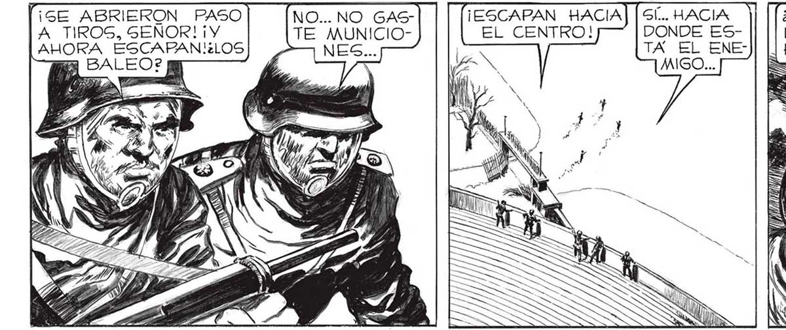
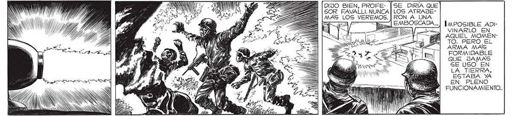

122 == E y e ¡GE ABRIERON PASO A TIROS, GEÑOR! ¡Y AHORA ESCAPAN!¿LOS CA o = A e 2 ASS YA aa ICA us RS | a NO... NO GASTE MUNICIO¡ESCAPAN HACIA EL CENTRO! TUI ; AN y PEE EEES ? e SÍ... HACIA DONDE ESTA EL ENEMIGO... MA" AN E $ s Sd y ANS YI BLE ZA SF ZA 7 ISR 7 AS á a DL == 3 2, 0 ISI el | yu ¿QUÉ SERA LO QUE LOS IMPULSA A, R? ¿QUÉ HABRAN (| (il US , A > ARE Fa ¿S á O SS S AN ¿e Q X= EMBOSCADA... A , > > $ >= HE 4 IMPOSIBLE ADIVINARLO EN AQUEL MOMENTO. PERO EL ARMA MAS FORMIDABLE QUE JAMAS GE USO EN LA TIERRA, ESTABA YA EN PLENO FUNCIONAMIENTO...

